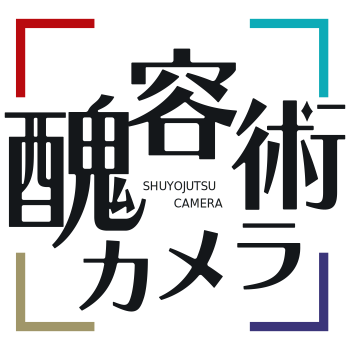

醜容術カメラ
変顔の歴史
メッセージ

【セキュリティについて】
本Webサイトは、ブラウザ上で顔認識・撮影・加工等の全ての処理を行なっています。
サーバー上にインカメラの動画や加工した画像が保存されることはありません。
ページの再読み込みを行うと、撮影した写真や加工した画像はページ内から全て消去されます。
個人情報漏洩等の心配はありませんので、ご安心してお楽しみください。
【メッセエジ】
さて、本Webサイトは、昔から楽しまれてきた変顔を
改めて楽しんでみようということを目的として制作いたしました。
明治時代のカメラほどではないですが、
撮影までにほんのちょっと時間がかかったのち、
江戸や明治期の本の挿絵ような雰囲気の変顔アイコンを作成をすることができます。
マスクで顔が隠れてばかりのこのご時世ですが、
今の時間だけ外していただいて、思いっきり顔を動かして、お楽しみください。